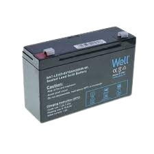

Acumulatorul cu plumb (sau acumulatorul acid) reprezintă cel mai vechi și cel mai simplu tip de acumulator.
Acumulatorul cu plumb
Deși are greutate și volumul ridicate, prezintă avantajul furnizării unui curent puternic la conectare, ceea ce este necesar pornirii motoarelor termice folosite pe larg la functionarea automobilelor. Prezintă față de alte tehnologii de acumulator un raport energie/preț favorabil. Era luat inițial în vedere ca sursă de energie pentru autovehicule electrice, dar din cauza greutății mari a lăsat locul altor tehnologii, fiind folosit mai ales în alimentarea stivuitoarelor electrice unde servește și ca balast echilibrant de masă pe axa roților din spate. De asemenea este folosit ca baterie de start la autocamioane. A fost inventat din 1859 de fizicianul francez Gaston Planté.

Din punct de vedere tehnic-operațional, acumulatorii cu plumb se caracterizează prin:
tensiunea: determinată de numărul de elemente în serie;
capacitatea acumulatorului: arată perioada de descărcare și se măsoară în Amperi oră (Ah);
curentul de lucru maxim admisibil: nu trebuie depășit căci se produce distrugerea acumulatorului;
randamentul energetic: dat de raportul ηW= Wdesc/Winc, care este de ordinul 70-80% din cauza pierderilor de energie prin reacții chimice secundare (care determină și diferența dintre tensiunea medie de încărcare și tensiunea medie de descărcare) și prin efect electrocaloric în rezistența lui interioară;
randamentul în cantitate de electricitate în sarcină (Q= Qdesc/Qinc) de ordinul a 85-90%;
tipul constructiv: adecvat condițiilor de utilizare și durabilității necesare (acumulatoarele de dimensiuni mici pentru autovehicule, cele de dimensiuni mari pentru instalații staționare).
Alcătuire
Structura elementară a acumulatorului acid este celula, o baterie de 12 V având 6 celule. Celula este constituită dintr-un vas, un element și electrolit. Vasul unei celule este practic un compartiment al întregului vas al bateriei obținut prin divizarea acestuia cu ajutorul pereților despărțitori. Este realizat, în general, din polipropilenă.
La baza vasului, în interior sunt prevăzute nervurile pe care se așează electrozii (sub formă de placă) distanțându-se astfel de fundul vasului. Se creează un spațiu în care se poate depune substanța activă desprinsă de pe plăci, evitându-se scurtcircuitarea plăcilor. La partea exterioară, vasul se închide cu un capac prevăzut cu bușoane de umplere prin care trec bornele exterioare ale bateriei.
Electrozii au forma unor plăci, deosebindu-se electrozi negativi și electrozi pozitivi. O placă este alcătuită dintr-un suport sub formă de grătar și materia activă. Grătarul este executat din plumb la care se adaugă materiale pentru a facilita procesul de turnare. Acestea pot fi stibiu sau calciu pentru baterii cu întreținere redusă. Grătarul asigură forma plăcii și rezistența mecanică a plăcii, este suport pentru materia activă și calea de curent spre și de la materia activă a plăcii.
Materia activă este substanța care întreține fenomenele electrochimice la încărcare și la descărcare. Ea poate rezulta direct din metalul suportului, sau se prepară sub formă de pastă și se aplică pe suport. În cazul acumulatoarelor auto, plăcile electrod sunt de tipul pastat